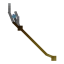
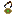
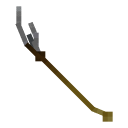

Overview#
| Container | Stone | Gives the power? | Getting the stone out | Putting it back |
|---|---|---|---|---|
| Tesseract |  Space Stone Space Stone | Yes, in either hand | Hit it on the ground (the Tesseract is gone after) | Can't |
 Scepter |  Mind Stone Mind Stone | Yes, in either hand | Hit it on the ground: you get the stone and an Empty Scepter | Right-click the Empty Scepter on the ground with the stone |
 Aether Aether |  Reality Stone Reality Stone | Yes, in either hand | Hit it on the ground (the Aether is gone after) | Empty Aether with the stone in your off hand, or right-click it on the ground |
 Orb Orb |  Power Stone Power Stone | No | Crack the lock, open it, right-click | Open it and right-click with the stone |
 Eye of Agamotto |  Time Stone Time Stone | Yes, held or worn, while the stone is in it | Wear it, open it, Remove Time Stone, or hit it on the ground | Wear it, open it, Insert Time Stone |
Tesseract#
Tesseract
infinity:tesseractThe cube from Odin's vault, with the Space Stone inside. Gives the Space Stone's power in either hand. Hit it on the ground to get the stone out.
- How to get it
- Item frame inside the Norse Village (Overworld).
- Rarity
- Epic
- Category
- Stone Containers
The Tesseract was kept in Odin's vault before it ended up in the Norse Village, looked after by the Asgardian worshippers there. In either hand it gives you the Space Stone's power, and it counts as a Space source for Meteor Storm. Its glowing core spins inside the cube like it did in Heroes Expansion. Drop it and hit it to break it open, and the Space Stone falls out with a flash of blue.
Scepter#
Scepter
infinity:scepterLoki's staff, an iron tier sword with the Mind Stone in it. Gives the Mind Stone's power in either hand and fires the Scepter Power Blast from the main hand.
- How to get it
- Glow item frame inside the Sanctuary (The End).
- Rarity
- Epic
- Category
- Stone Containers

Empty Scepter
infinity:empty_scepterIron tier sword. Right-click it on the ground while holding the Mind Stone to rebuild the Scepter.
- How to get it
- Left behind when a Scepter is broken open.
- Rarity
- Epic
- Category
- Stone Containers
Loki's Scepter is an iron tier sword with the Mind Stone in it. In either hand it gives the Mind Stone's power, and in your main hand you also get the Scepter Power Blast. Hit it on the ground to split it into the Mind Stone and an Empty Scepter. Right-click an Empty Scepter on the ground while holding the Mind Stone to put it back together (or the other way round).
Aether#
Aether
infinity:aetherThe Reality Stone in its fluid form, the weapon Malekith wanted. Gives the Reality Stone's power in either hand. Hit it on the ground to get the stone out.
- How to get it
- Glow item frame in the Aether Chamber (Svartalfheim), guarded by Malekith.
- Rarity
- Epic
- Category
- Stone Containers

Empty Aether
infinity:empty_aetherTo put the Reality Stone back in, hold the stone in your off hand and use Insert Reality Stone, or right-click the Empty Aether on the ground with the stone.
- How to get it
- Craftable (see JEI).
- Rarity
- Epic
- Category
- Stone Containers
The Aether is the Reality Stone in liquid form, the weapon Malekith tried to use to put the universe back into darkness. In either hand it gives the Reality Stone's power. Hit it on the ground to turn it back into the stone. To make an Aether again, hold the Reality Stone in your off hand and an Empty Aether in your main hand and use:
Insert Reality Stone#
With the Reality Stone in your off hand, turns an Empty Aether back into the Aether.
infinity:empty_aether · palladium:command
You can also right-click an Empty Aether lying on the ground while holding the Reality Stone.
Orb#
Orb
infinity:orbThe Power Stone's casing from the Morag vault. It has a combination lock you open with Rotate Left and Rotate Right.
- How to get it
- Armor stand inside the Morag Temple (Morag).
- Rarity
- Epic
- Category
- Stone Containers
The Orb from the Morag Temple vault has a combination lock. It does not give you the Power Stone's power while it's closed. Hold it (the off hand works best) and its abilities show up in the ability bar:
Rotate Left / Rotate Right#
Turns the Orb’s combination lock one step.
infinity:orb · geckolib:render_layer_animation
Open / Close Orb#
Once you know the combination, opens the Orb so you can take or put back the Power Stone.
infinity:orb · palladium:dummy
Lock Orb#
Locks the Orb again. You will need the combination to open it.
infinity:orb · palladium:command
Cracking the combination#
- Every world has its own random sequence of left and right turns, 15 turns long by default. The length is in the config, and changing it makes a new sequence.
- Use Rotate Left and Rotate Right. A right turn just clicks. A wrong one plays a low note, puffs smoke and sends you back to the start.
- A wrong turn tells you the other direction was right for that step, so write the sequence down as you go.
- After the last correct turn an iron door sound plays, sparks fly, and the Orb is unlocked for you. Unlocking is per player, but the sequence is the same for everyone in the world.
Opening it and taking the stone#
- Once it's unlocked, Open / Close Orb opens the shell and the Power Stone grows into view. You can open it as often as you like after that.
- With the Orb open, right-click to take the Power Stone. There's only one per world, so if someone already took it you'll see "The Power Stone has already been taken from an Orb."
- To put it back, open the Orb and right-click while holding the Power Stone in your other hand.
- Lock Orb locks it for you again, if you want to crack it again.
Operators can skip the puzzle with /infinity unlock_orb.
Eye of Agamotto#
Eye of Agamotto
infinity:eye_of_agamottoAgamotto's amulet. Wear it on your chest (it counts as iron armor) or in the Curios necklace slot. It opens up to show the Time Stone and gives you the Time Stone's power while the stone is in it.
- How to get it
- Armor stand inside the Sanctum Sanctorum (Overworld). Also craftable (see JEI).
- Rarity
- Epic
- Category
- Stone Containers
Agamotto, the first Sorcerer Supreme, made the Eye to hold the Time Stone, and the Masters of the Mystic Arts kept it in the Sanctum Sanctorum. Wear it on your chest (it counts as iron armor) or in the Curios necklace slot. While it still has the stone, wearing or holding it gives you the Time Stone's power. Its abilities:
Open / Close Eye#
Opens or closes the Eye of Agamotto you are wearing.
infinity:eye_of_agamotto · infinity:eye_of_agamotto
Remove / Insert Time Stone#
Take the Time Stone out of the open Eye, or put a held one back.
infinity:eye_of_agamotto · infinity:eye_of_agamotto
- Open Eye opens it with an animation, and the stone starts glowing once it's open.
- Remove Time Stone (while it's open) gives you the stone and leaves the Eye empty. There's only one Time Stone per world, so if it's already gone you'll see "The Time Stone has already been taken from an Eye of Agamotto."
- Insert Time Stone (while it's open and empty) needs the Time Stone in one of your hands.
- Hitting the Eye while it's on the ground also lets the stone out. The Eye stays where it is.
- Old Empty Eye of Agamotto items from earlier versions still work, and turn into the normal Eye when you put the stone in.
Cosmi-Rod#

Cosmi-Rod
infinity:cosmi-rodRonan's Universal Weapon. A netherite tier weapon with a socket for one stone (right-click to open it). Gives that stone's power while held, plus Shockwave.
- How to get it
- Item frame in the Crashed Kree Ship (Overworld plains).
- Rarity
- Epic
- Category
- Weapons & Tools
Ronan the Accuser's Universal Weapon, found in the Crashed Kree Ship. It's a netherite tier weapon with a socket for one stone:
- Right-click with it in your main hand to open its one slot menu and put a stone in. Addon stones work too.
- In either hand it gives you the power of the stone inside, which is drawn on the rod in its color. This is a safe way to carry the Power Stone.
- The tooltip shows which stone is in it. The old one rod per stone items from earlier versions turn into an empty rod.
Holding it also gives you this:
Shockwave#
A blast from your hand that throws back and hurts everything in front of you.
Lasts 7 ticks and does 5 damage per tick to everything in a box in front of you that grows up to 4 blocks, launching it the way you're facing. 5 second cooldown. Works with the Cosmi-Rod in either hand.
infinity:cosmi_rod · infinity:shockwave
Soul Guardian Telephone#

Soul Guardian Telephone
infinity:soul_guardian_telephoneRight-click to call the Soul Guardian from Vormir to you. Sneak + right-click to send it back.
- How to get it
- Craftable (see JEI).
- Rarity
- Epic
- Category
- Special Items
Summon / Return Soul Guardian#
Calls the Soul Guardian over from Vormir. Sneak and right-click to send it back.
infinity:soul_guardian_telephone · palladium:command
- Right-click to bring the Soul Guardian from Vormir to you. The phone loads the Vormir area for the call.
- The Guardian goes back to Vormir by itself after 1,200 ticks (one minute).
- Sneak and right-click to send it back straight away.
- The cooldown is 24,000 ticks (one Minecraft day, 20 minutes).
Items on the ground#
The stones, all the containers, the gauntlet, the Cosmi-Rod and both swords behave differently when you drop or throw them:
- They land where you threw them and lie flat instead of floating and spinning.
- They can't be destroyed, burnt or blown up, they never despawn, and they stop at the bottom of the world instead of falling out.
- Walking over them doesn't pick them up. Right-click them. They keep all their data (a gauntlet's stones and skin, names, enchantments).
- Containers with a stone break open when you hit them, and stones and empty containers join up when you right-click one with the other.
- While someone is carrying a stone, any copy of it on the ground disappears, so stones can't be duplicated.
Addons can make their own items work like this, see Ground Items.